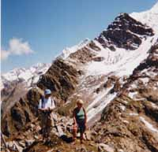

Grande Roche de Tré la Tête (2454 m)

Départ : refuge de Tré la Tête (1970 m)
Aller : 1,5 km, +484 m, 97 min
Retour : 1,5 km, - 484 m, 67 min
Difficulté : AF
Période : mi juillet - septembre
Remarque : réservé aux bons montagnards (sens de l’itinéraire indispensable ; trajet exposé ; n’entreprendre que par une belle journée).
Bibliographie : Alain Lutz, tome 1, course 88.
Quitter le refuge par le chemin des Cosmiques et, 20 m au-dessus, prendre une sente à G au droit d’un piquet métallique rouillé. Vers 2035 m, gagner E un replat avec un poteau à neige. Le sentier se perd, puis remonte une moraine, et utilise une petite vire. Vers 2170 m, la sente remonte à G une pente d’herbe raide. En haut de cette pente, plusieurs issues pour continuer : la meilleure, traverser à D puis reprendre à G (2210 m).
Sous un rocher, remonter un court couloir parpineux, traverser à G puis à D des pentes herbeuses raides. La sente se divise : prendre celle qui monte raide à G, passe sur de petites vires et atteint un petit cairn (2290).
Elle tourne encore à G (W) sur 20 m, repart droit dans la pente, atteint une zone de rochers délités sur la G et s’approche de l’arête W de la Grande Roche. Elle reste 20 m en contrebas et atteint un cairn vers 2360 m. Rejoindre le sommet.
Descente par le même itinéraire, qui est plus évident dans ce sens.
Photo : au sommet